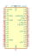
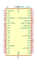
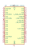
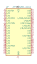
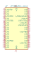

| Symbol |
Description |
ATF1502AS-xAx44 | Description: Microchip CPLD, 32 Macrocell, 5 V, TQFP-44
Keys: CPLD
Datasheet: http://ww1.microchip.com/downloads/en/DeviceDoc/Atmel-0995-CPLD-ATF1502AS(L)-Datasheet.pdf |
ATF1502ASL-xAx44 | Description: Microchip CPLD, 32 Macrocell, 5 V, Low Power, TQFP-44
Keys: CPLD
Datasheet: http://ww1.microchip.com/downloads/en/DeviceDoc/Atmel-0995-CPLD-ATF1502AS(L)-Datasheet.pdf |

ATF1502ASV-xAx44 | Description: Microchip CPLD, 32 Macrocell, 3.3 V, TQFP-44
Keys: CPLD
Datasheet: http://ww1.microchip.com/downloads/en/DeviceDoc/doc1615.pdf |

ATF1504AS-xAx44 | Description: Microchip CPLD, 64 Macrocell, 5 V, TQFP-44
Keys: CPLD
Datasheet: http://ww1.microchip.com/downloads/en/DeviceDoc/Atmel-0950-CPLD-ATF1504AS(L)-Datasheet.pdf |

ATF1504ASL-xAx44 | Description: Microchip CPLD, 64 Macrocell, 5 V, Low Power, TQFP-44
Keys: CPLD
Datasheet: http://ww1.microchip.com/downloads/en/DeviceDoc/Atmel-0950-CPLD-ATF1504AS(L)-Datasheet.pdf |

ATF1504ASV-xAx44 | Description: Microchip CPLD, 64 Macrocell, 3.3 V, TQFP-44
Keys: CPLD
Datasheet: http://ww1.microchip.com/downloads/en/DeviceDoc/ATF1504ASV-ATF1504ASVL-Data-Sheet-20006185A.pdf |

ATF1504ASVL-xAx44 | Description: Microchip CPLD, 32 Macrocell, 3.3 V, Low Power, TQFP-44
Keys: CPLD
Datasheet: http://ww1.microchip.com/downloads/en/DeviceDoc/ATF1504ASV-ATF1504ASVL-Data-Sheet-20006185A.pdf |